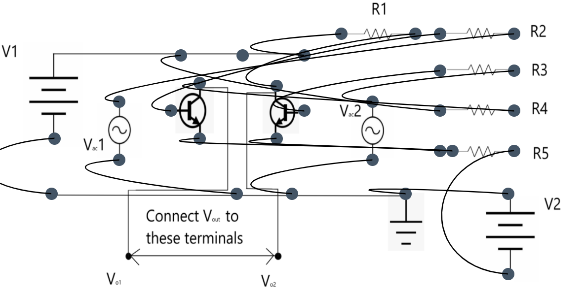

Procedure
- Refer to the following diagrams to make connections in the simulation for Differential Amplifier.
- Connect the wires in the simulation as per the given diagram

- After connections are made, click on 'check' to check them.
- If unable to make correct connections, click on 'connect automatically'
- It is necessary to click on 'check' to set resistance values automatically and begin calculations
- Set various values of input voltages click on 'calculate' to fill observation table rows
- Use CMRR values from the table to calculate Noise%
« Previous
Next »